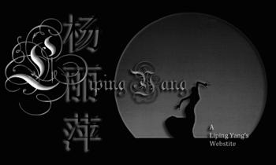

This is a website for Liping Yang. All contents is about the "Peacock Princess" Liping Yang from Bai Ethnic Minority Group as a legend dancer in china. She contributed all her life in danceing specially in the promoted the develpoment of original ecology song and dance. She was awarded many prizes for this.
Designed by Shaoqing Yu. All Right Reserved.
Designed by Shaoqing Yu. All Right Reserved.